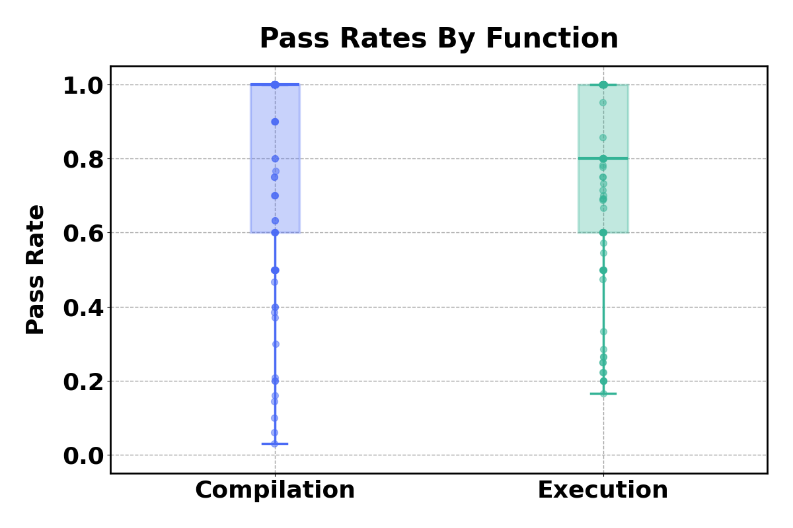

We
completely translate
Zopfli, a compression algorithm known
to achieve superior compression ratios by extensively optimizing the compression process.
The codebase consists of over 3000 lines of C code (excluding comments),
comprising 98 functions and 10 structs, and spans over 21 files.
It provides a challenging testbed for evaluating our approach due to the diversity of
the source code constructs, including heap-based data structures
(such as linked lists and array iterators), function pointers, and void* arguments.
Our translated Zopfli program ranges over 7000 lines (including verbose comments and
docstrings).
Pass Rate
We study the quality of the translation candidates across functions with two metrics: compilation pass rate
and execution pass rate. Compilation pass rate is computed as the number of translations that compile
against the total number of translations generated. The execution pass rate is computed as the number of
translations that pass the equivalence test compared to the total number of compiling translations.

The mean pass rates are high, ranging over 75% for both compilable and executable translations.
However, the distribution shows a long tail of
challenging functions with lower pass rates (below
20%).
Efficiency
We further evaluated the final translated Rust code on
varied test inputs and compared the output and execution time with the original C code.
We construct two test suites -- first with six strings formed by repeating 'a'
different number of times (between 10 and 1000000 times) and second with
twelve random strings of varying lengths (between 1000 and 1000000 characters).
Additionally, we compare the execution times under default compilation configuration
(
gcc -O0 -g and
cargo debug) and optimized compilation configuration
(
gcc -O3 and
cargo build --release) for both the C and Rust implementations.
Performance Comparison of C and Rust Implementations
| Input Type |
Default |
Optimized |
| C |
Rust |
Slowdown |
C |
Rust |
Slowdown |
| Repeated Input |
0.17 |
1.56 |
8.9x |
0.040 |
0.059 |
1.47x |
| Random Input |
0.242 |
3.336 |
13.8x |
0.094 |
0.330 |
3.67x |
We find that the translated Rust code is equivalent but slower, with larger slowdowns,
in the default compilation compared to the optimized compilation configuration.
Even with the compiler optimization, the Rust code is up to 3.67X slower than the C code.